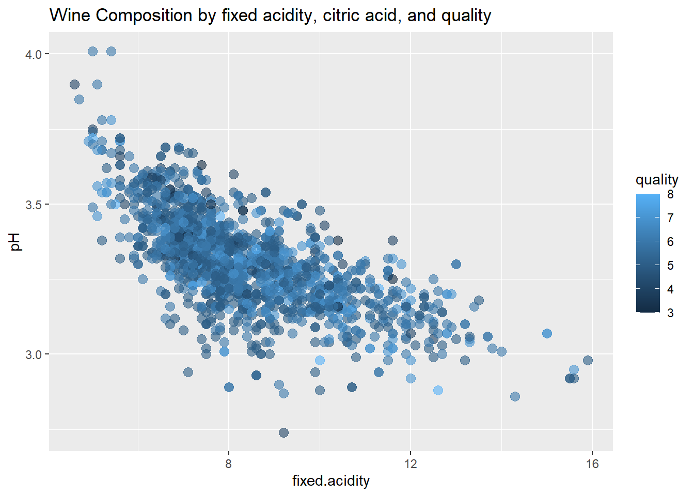
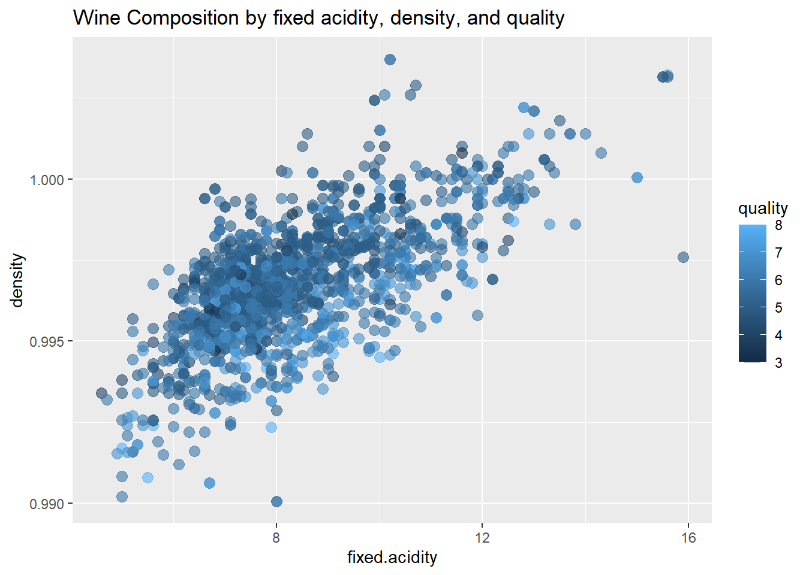

Chapter 4 Multivariate Exploration
Correlations between the variables
# ++++++++++++++++++++++++++++
# flattenCorrMatrix
# ++++++++++++++++++++++++++++
# cormat : matrix of the correlation coefficients
# pmat : matrix of the correlation p-values
flattenCorrMatrix <- function(cormat, pmat) {
ut <- upper.tri(cormat)
data.frame(
row = rownames(cormat)[row(cormat)[ut]],
column = rownames(cormat)[col(cormat)[ut]],
cor =(cormat)[ut],
p = pmat[ut]
)
}
res2 <- rcorr(as.matrix(df))
cor.m <- flattenCorrMatrix(res2$r, res2$P)
cor.m[order(cor.m[,3],decreasing=TRUE),]## row column cor p
## 2 fixed.acidity citric.acid 0.671703435 0.000000e+00
## 22 fixed.acidity density 0.668047292 0.000000e+00
## 21 free.sulfur.dioxide total.sulfur.dioxide 0.667666450 0.000000e+00
## 66 alcohol quality 0.476166324 0.000000e+00
## 41 chlorides sulphates 0.371260481 0.000000e+00
## 24 citric.acid density 0.364947175 0.000000e+00
## 25 residual.sugar density 0.355283371 0.000000e+00
## 39 citric.acid sulphates 0.312770044 0.000000e+00
## 65 sulphates quality 0.251397079 0.000000e+00
## 30 volatile.acidity pH 0.234937294 0.000000e+00
## 58 citric.acid quality 0.226372514 0.000000e+00
## 54 pH alcohol 0.205632509 0.000000e+00
## 9 citric.acid chlorides 0.203822914 2.220446e-16
## 19 residual.sugar total.sulfur.dioxide 0.203027882 2.220446e-16
## 26 chlorides density 0.200632327 4.440892e-16
## 14 residual.sugar free.sulfur.dioxide 0.187048995 4.685141e-14
## 37 fixed.acidity sulphates 0.183005664 1.647571e-13
## 44 density sulphates 0.148506412 2.418474e-09
## 6 citric.acid residual.sugar 0.143577162 8.083723e-09
## 56 fixed.acidity quality 0.124051649 6.495635e-07
## 4 fixed.acidity residual.sugar 0.114776724 4.199465e-06
## 48 citric.acid alcohol 0.109903247 1.059462e-05
## 7 fixed.acidity chlorides 0.093705186 1.751746e-04
## 55 sulphates alcohol 0.093594750 1.783053e-04
## 17 volatile.acidity total.sulfur.dioxide 0.076470005 2.213857e-03
## 28 total.sulfur.dioxide density 0.071269476 4.354284e-03
## 34 free.sulfur.dioxide pH 0.070377499 4.869975e-03
## 8 volatile.acidity chlorides 0.061297772 1.422491e-02
## 10 residual.sugar chlorides 0.055609535 2.617079e-02
## 42 free.sulfur.dioxide sulphates 0.051657572 3.888321e-02
## 20 chlorides total.sulfur.dioxide 0.047400468 5.809120e-02
## 43 total.sulfur.dioxide sulphates 0.042946836 8.601835e-02
## 49 residual.sugar alcohol 0.042075437 9.258425e-02
## 18 citric.acid total.sulfur.dioxide 0.035533024 1.555454e-01
## 23 volatile.acidity density 0.022026232 3.787554e-01
## 59 residual.sugar quality 0.013731637 5.832180e-01
## 15 chlorides free.sulfur.dioxide 0.005562147 8.241238e-01
## 40 residual.sugar sulphates 0.005527121 8.252134e-01
## 5 volatile.acidity residual.sugar 0.001917882 9.389168e-01
## 12 volatile.acidity free.sulfur.dioxide -0.010503827 6.747011e-01
## 27 free.sulfur.dioxide density -0.021945831 3.804985e-01
## 61 free.sulfur.dioxide quality -0.050656057 4.283398e-02
## 64 pH quality -0.057731391 2.096278e-02
## 13 citric.acid free.sulfur.dioxide -0.060978129 1.473916e-02
## 46 fixed.acidity alcohol -0.061668271 1.364868e-02
## 35 total.sulfur.dioxide pH -0.066494559 7.818341e-03
## 51 free.sulfur.dioxide alcohol -0.069408354 5.492314e-03
## 32 residual.sugar pH -0.085652422 6.065915e-04
## 16 fixed.acidity total.sulfur.dioxide -0.113181443 5.709033e-06
## 60 chlorides quality -0.128906560 2.313383e-07
## 11 fixed.acidity free.sulfur.dioxide -0.153794193 6.335581e-10
## 63 density quality -0.174919228 1.874945e-12
## 62 total.sulfur.dioxide quality -0.185100289 8.615331e-14
## 45 pH sulphates -0.196647602 2.220446e-15
## 47 volatile.acidity alcohol -0.202288027 4.440892e-16
## 52 total.sulfur.dioxide alcohol -0.205653944 0.000000e+00
## 50 chlorides alcohol -0.221140545 0.000000e+00
## 1 fixed.acidity volatile.acidity -0.256130895 0.000000e+00
## 38 volatile.acidity sulphates -0.260986685 0.000000e+00
## 33 chlorides pH -0.265026131 0.000000e+00
## 36 density pH -0.341699335 0.000000e+00
## 57 volatile.acidity quality -0.390557780 0.000000e+00
## 53 density alcohol -0.496179770 0.000000e+00
## 31 citric.acid pH -0.541904145 0.000000e+00
## 3 volatile.acidity citric.acid -0.552495685 0.000000e+00
## 29 fixed.acidity pH -0.682978195 0.000000e+004.1 Visualize Correlations
# Insignificant correlations are leaved blank
corrplot(res2$r, type="upper", order="hclust",
p.mat = res2$P, sig.level = 0.01, insig = "blank")
#Visualization of a Correlation Matrix. On top the (absolute) value of the correlation plus the result of the cor.test as stars. On bottom, the bivariate scatterplots, with a fitted line
chart.Correlation(df, histogram=TRUE, pch=19)
ggplot(df,
aes(x = fixed.acidity,
y = pH,
color = quality)) +
geom_point(size = 3,
alpha = .6) +
labs(title = "Wine Composition by fixed acidity, citric acid, and quality")
ggplot(df,
aes(x = fixed.acidity,
y = density,
color = quality)) +
geom_point(size = 3,
alpha = .6) +
labs(title = "Wine Composition by fixed acidity, density, and quality")